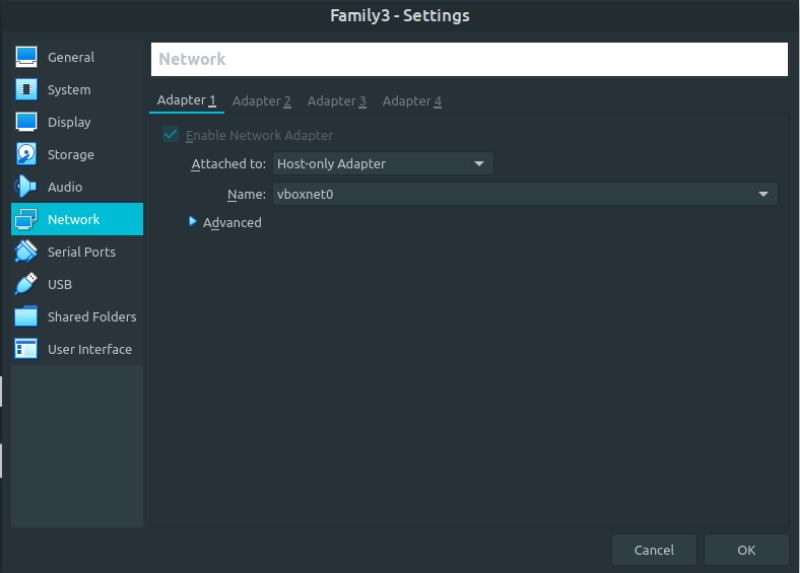
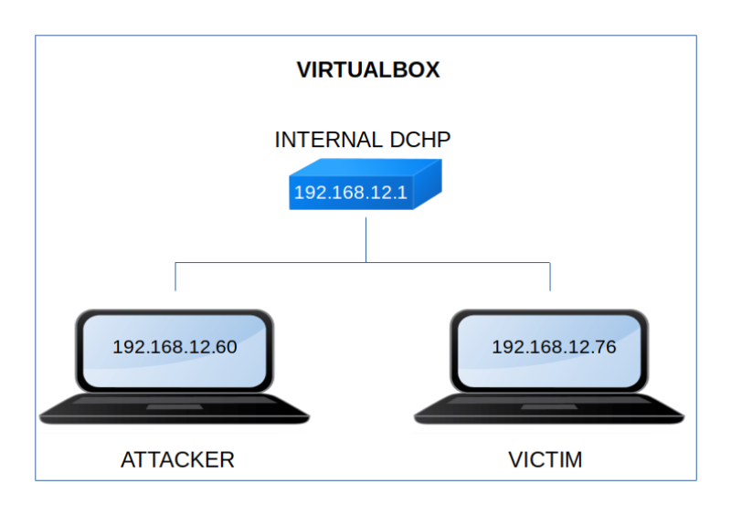

Family3
▸ Family3
▸ 2. Finding Services and Ports
▸ 4.3 SSH
▸ 4.7 Create key for user "dad"
▸ 4.9 Baby's sudoer (First flag)
▸ 4.10.1 Decrypting file (Second flag)
Difficulty: Intermediate.
Flag: 2 flags.
Learning:
• Reconnaissance
Scan Network
Find services
• Enumerate
CUPS
• Exploitation
Fuzzing
Ping6, ARP and ip
SSH
Get user
Payload
pspy64
Create key for user
Sudoer
• Privilege Escalation
Sudoer for baby user
Shell
Decrypt password
• Download (Mirror): https://downloads.hackmyvm.eu/family3.zip
Install the machine on VirtualBox:
1. Download the file and extract it.
2. On Virtualbox choose File->Import Appliance.
3. Select the file “ova”.
4. Accept to import.


Watch your Machine IP.
$ ifconfigOutput:

Diagram
